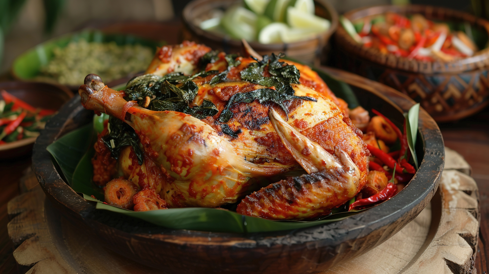
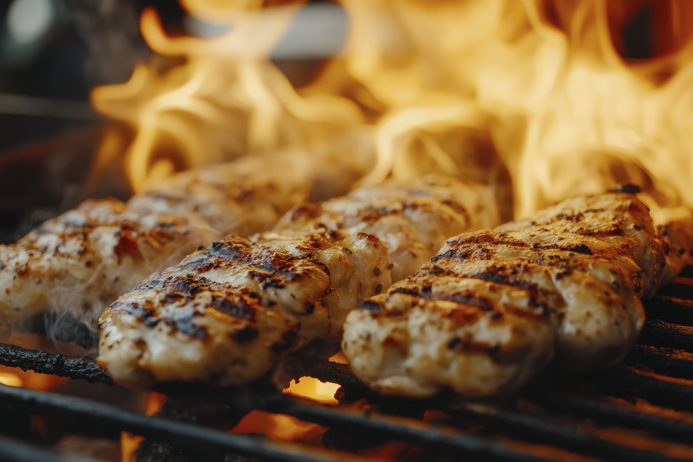
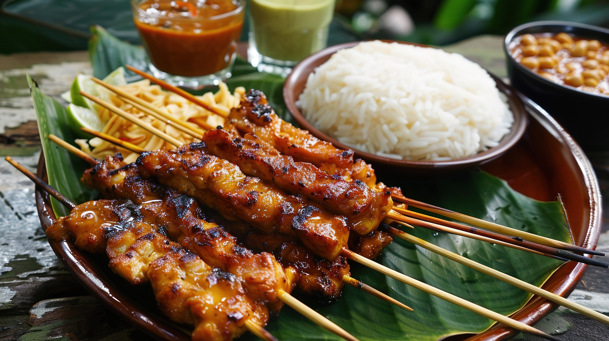
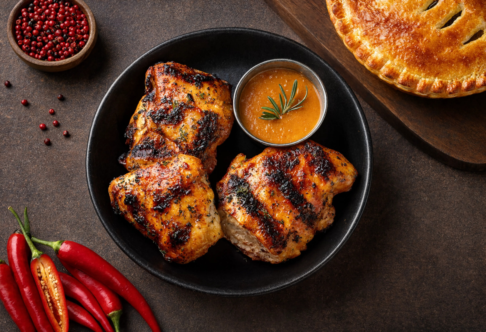
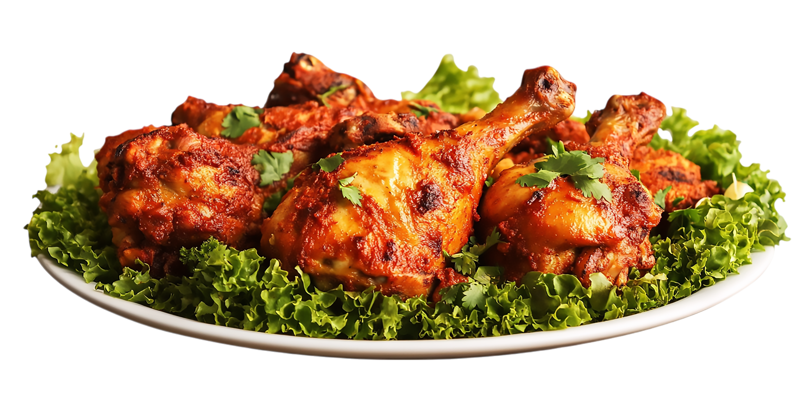

UMKM Pekalongan
Galeri Ayam Bakar Madu Damar
Ayam Bakar asli Pekalongan yang gurih dan mengenyangkan.
Media Usaha





Nada Penanda Kedai
Nada uji singkat memastikan elemen audio dan kontrol browser dapat diperiksa.